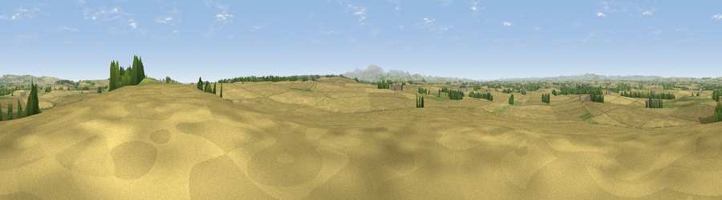

Viewpoint near Horncliffe
#16464 in England · top 66% of its area beats it · near HorncliffeThe view, rendered

A 360° render of this exact spot computed from the terrain model, tree cover and land cover — summer colours, afternoon light, calibrated against photographs of famous viewpoints. Real trees, hedges and buildings will differ in detail.
The panorama
Grey silhouette: terrain skyline in each direction (720 bearings, Earth curvature and refraction included). Dashed green: skyline with trees (+15 m) and buildings (+8 m) as obstacles. Blue strip: how far the ground is visible on each bearing.
Where the view opens
Wedge length = distance to the farthest visible ground on that bearing (vegetation-aware). Rings at 10, 25 and 50 km.
What fills the view
78% cropland · 17% grassland · 4% woodland ·
Angular shares of the visible panorama (visual magnitude), not map area. Landscape diversity 0.29 (0–1 Shannon).
Key numbers
More beautiful places nearby
The staircase of upgrades: each row has a higher view potential than everything closer. Driving times are estimates from straight-line distance, calibrated against real road routing — check an actual route before setting out.
| Place | Direction | Drive | Score |
|---|---|---|---|
| Mattilees Hill | SSE · 3 km | ~7 min | 58.3 |
| Mill Hill | SW · 6 km | ~12 min | 60.3 |
| Billylaw | NE · 6 km | ~12 min | 67.2 |
| Viewpoint near Etal | S · 6 km | ~13 min | 72.1 |
| Halidon Hill | NNE · 9 km | ~18 min | 82.2 |
| Moneylaws Hill | SSW · 13 km | ~24 min | 83.0 |
| Greensheen Hill | SE · 16 km | ~28 min | 87.5 |
| Viewpoint near Chillingham | SE · 25 km | ~41 min | 88.1 |
55.70987, -2.10620 · source: screening · position refined by local search. Computed location — check access rights before visiting.